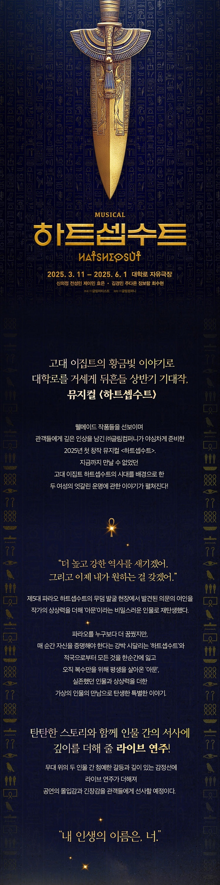

Introduce
가장 강력했던 권력을 가진 고대 이집트의 5대 파라오 '하트셉수트' 시대를 모티브로 한 뮤지컬 <하트셉수트>가 3월 개막 소식을 알리며, 메인 포스터와 캐스팅을 공개했다.
뮤지컬 <하트셉수트>는 이집트의 여성 파라오 '하트셉수트'가 통치했던 시대를 배경으로, 역사에 강력한 왕으로 남고자 했던 '하트셉수트'와 이집트로 인해 모든 것을 동시에 잃은 '아문'을 둘러싼 갈등과 운명에 관한 이야기를 다루고 있다.
뮤지컬 <하트셉수트>는 이집트의 파라오 하트셉수트 무덤 발굴 당시 그녀 옆에 있던 한 구의 여성 미라의 이야기에서 시작되었다. 정필 작가는 "뮤지컬 <하트셉수트>는 '하트셉수트와 여성 미라는 어떤 관계였을까?'라는 질문에서 시작된 작품으로, 아직까지 밝혀지지 않은 파라오 옆 의문의 여인에 작가의 상상력을 더해 '아문'이라는 새로운 인물로 재탄생시켰다. 게다가 하트셉수트 시대에 대한 기록이 거의 남아 있지 않아 관객들에게 더욱 신선하고 흥미로운 이야기로 느껴질 것 같다"고 전했다. 또한, 그동안 대학로 뮤지컬에서 볼 수 없었던 '고대 이집트'와 '파라오'라는 신선한 배경과 함께 다양한 장르의 음악과 라이브 연주가 함께 어우러져 관객들에게 '하트셉수트'와 '아문'의 긴장감 있는 대립과 깊이 있는 서사를 무대 위에서 선보일 예정이다.
주변의 그 누구도 믿지 못하고, 이집트 역사상 최고의 파라오가 되기 위해 외롭게 자리를 지키고 있는 하트셉수트 역에는 신의정, 전성민, 제이민, 효은이 캐스팅됐다.
적국에 의해 부모와 조국을 동시에 잃고 복수의 순간만을 기다리며 살아온 아문 역은 김경민, 주다온, 장보람, 최수현이 맡는다.
제작사 관계자는 "여성 2인극의 장점을 살린 인물 간의 섬세한 서사와 다채로운 음악적 매력을 가진 넘버를 통해 관객들에게 깊은 인상을 전하며, 이전까지 보지 못했던 공연을 선보일 예정이다. 완성도 있는 작품을 만들기 위해 열심히 노력하며 준비하고 있으니 많은 관심과 기대 부탁드린다."라는 소감을 남겼다.
뮤지컬 <하트셉수트>는 오는 2025년 3월 11일부터 6월 1일까지 대학로 자유극장에서 공연된다.
